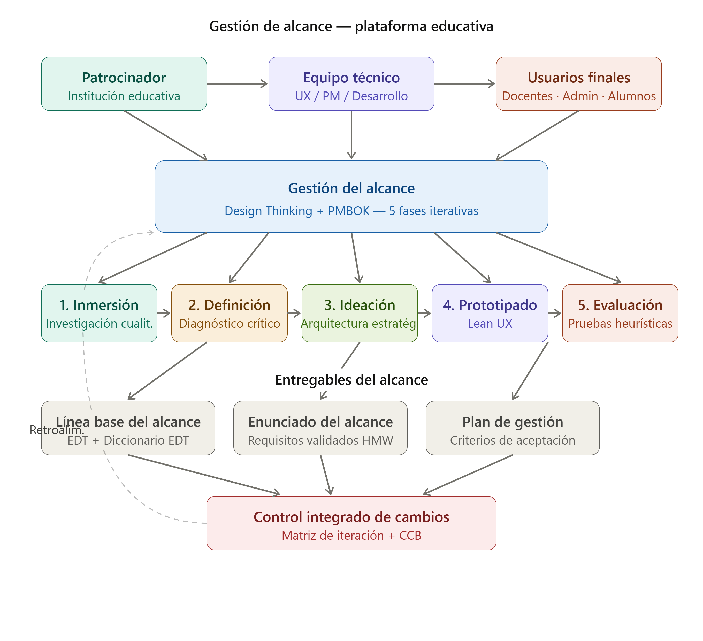
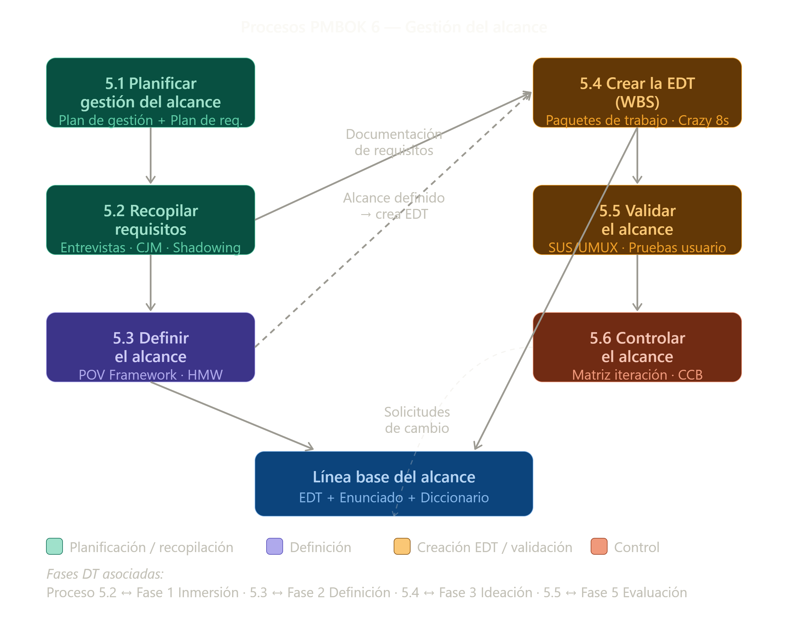
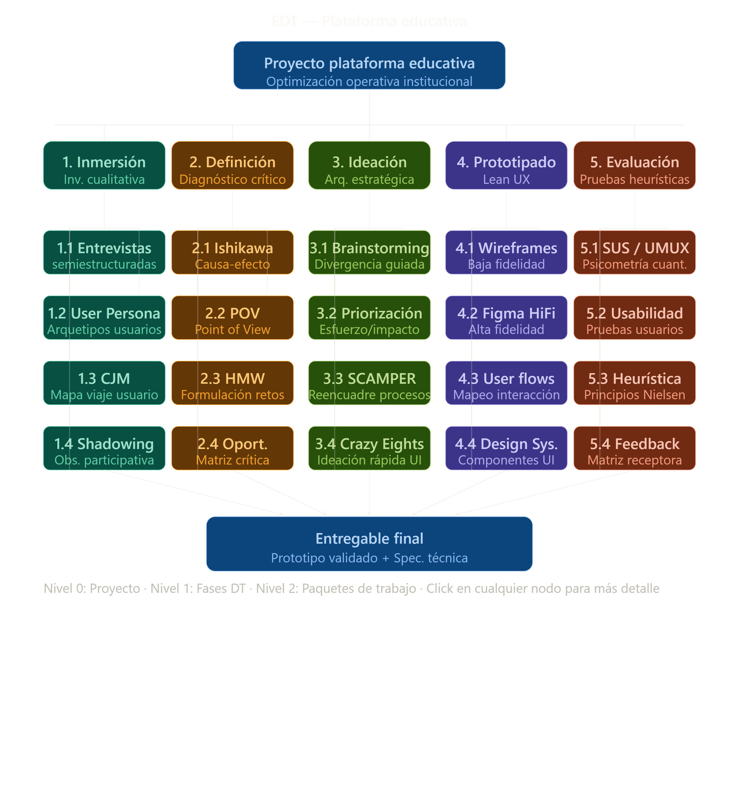

1. Grupo de Procesos de Inicio
Establecimiento del propósito del proyecto. Se identifican y registran los interesados clave (Stakeholders) y se definen las restricciones iniciales de alto nivel en el Project Charter.
Framework metodológico basado en la Guía del PMBOK® aplicado a la Transformación Digital del Ecosistema Educativo.
Estructuración formal de los procesos de gestión de proyectos. Permite un control riguroso sobre la triple restricción (Alcance, Tiempo y Costo), asegurando la calidad del producto de software y la correcta transición operativa en la institución.

Formalización del Acta de Constitución del Proyecto y alineamiento estratégico.
Desarrollo de la EDT, Plan de Gestión de Riesgos y línea base del cronograma.
Despliegue de la arquitectura tecnológica e ingeniería de software.
Establecimiento del propósito del proyecto. Se identifican y registran los interesados clave (Stakeholders) y se definen las restricciones iniciales de alto nivel en el Project Charter.

Establecimiento del alcance total del esfuerzo y definición de las líneas base. Desarrollo de la Estructura de Desglose del Trabajo (EDT/WBS) y el modelo de ruta crítica para la gestión del tiempo.

Integración de los recursos humanos y materiales para ejecutar las actividades contempladas en el plan de gestión. Desarrollo modular, refactorización e integración de las bases de datos de la plataforma.

Medición y análisis regular del desempeño del proyecto mediante la Gestión del Valor Ganado (EVM). Detección de desviaciones respecto a las líneas base para implementar acciones correctivas preventivas.

Finalización formal de todas las actividades contractuales y operativas del proyecto. Transferencia del producto final al cliente, recopilación de activos de los procesos de la organización y lecciones aprendidas.
La integración sistemática del enfoque ágil de diseño con las rigurosas prácticas de control de la Guía del PMBOK® mitiga el riesgo técnico, incrementa el índice de adopción del software y maximiza el valor entregado a la institución educativa.
Artefactos y estructuras del control y planificación del proyecto.


